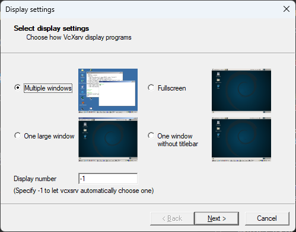
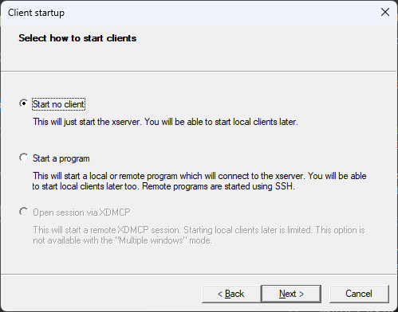
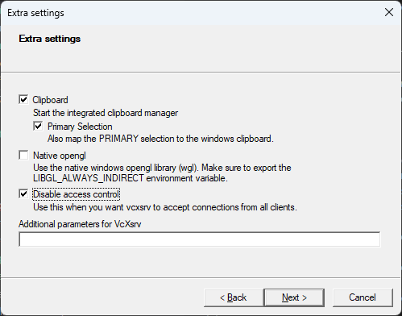
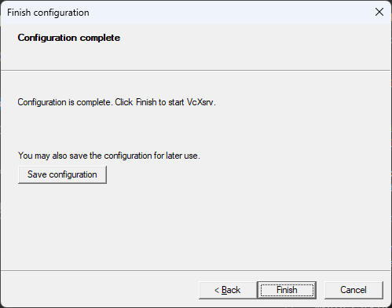
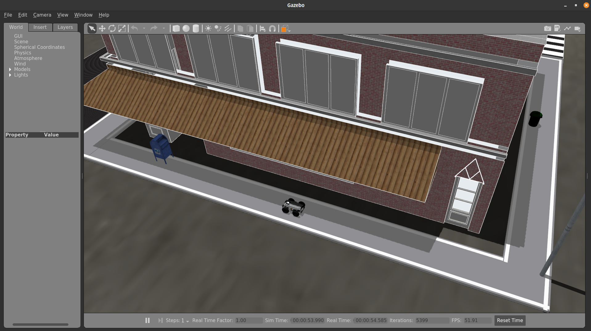
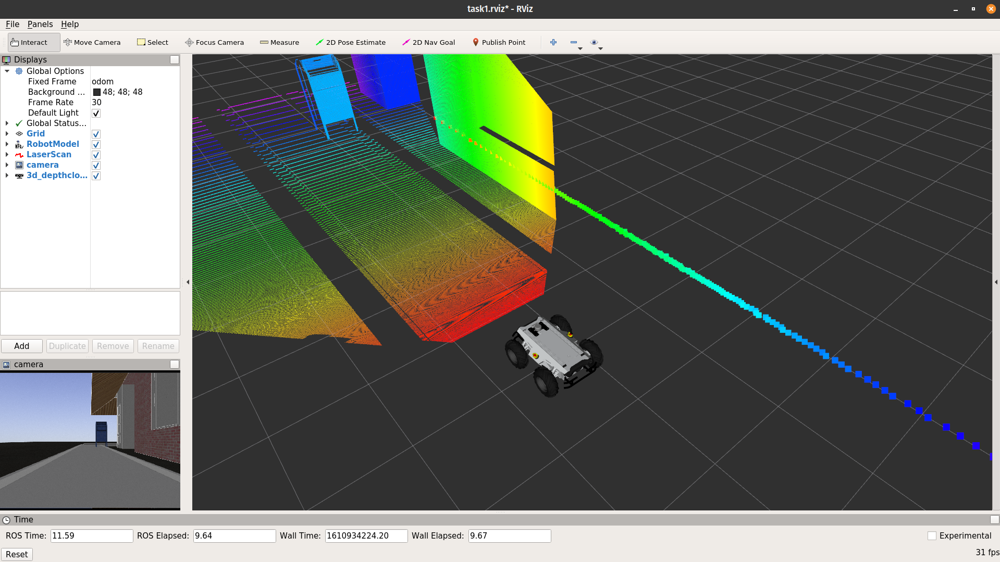
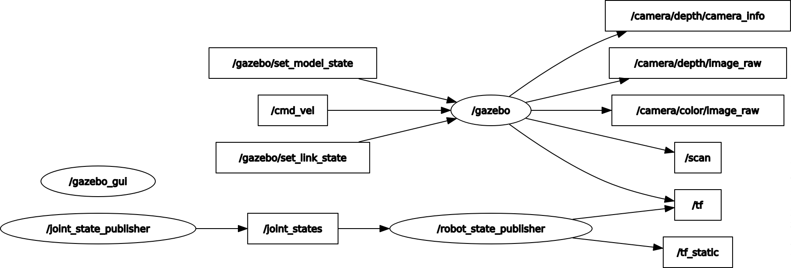

Configuration de votre espace de travail avec Docker sur Windows¶
Ce guide vous guidera tout au long du processus de mise en place d’un espace de travail ROS avec Docker, qui vous permettra de développer et de tester facilement vos projets ROS dans un environnement conteneurisé. Nous couvrirons également comment connecter VS Code au conteneur Docker et comment utiliser X11 pour exécuter les applications GUI Docker.
Conditions préalables¶
Avant de commencer par les étapes ci-dessous, assurez-vous que vous avez ce qui suit:
- Docker Desktop pour Windows installé et exécuté
- Code Visual Studio (Code vs) installé
- Git installé
Étape 1: Installer VcXsrv¶
- Téléchargez et installez VcXSrv sur votre ordinateur.
- Installez VcXSrv en exécutant l’installateur et en suivant les invites.
- Une fois l’installation terminée, ouvrez le VCXSRV en cliquant sur le menu Démarrer et en tapant
XLaunch. - Dans la fenêtre Xlaunch, sélectionnez l’option
multiple Windowset cliquez surNext.
- Dans la fenêtre suivante, sélectionnez l’option
Démarrez pas de clientet cliquez surNext.
- Dans la fenêtre suivante, sélectionnez l’option
Clips de presseet cliquez surNext. Désélectionnez l’optionnative OpenGLet sélectionnez l’optionDésactiver le contrôle d'accès.
- Dans la fenêtre suivante, cliquez sur
Finish.
Étape 2: Création du dossier principal et docker-compose.yml¶
- Créez un nouveau dossier dans votre emplacement préféré et nommez-le comme vous le souhaitez.
-
À l’intérieur du dossier nouvellement créé, créez un espace de travail ROS en exécutant la commande suivante dans PowerShell:
-
Ensuite, créez un fichier
docker-compose.ymldans le dossier principal. Ce fichier contiendra la configuration de notre conteneur Docker ROS. Ouvrez le fichier dans votre éditeur préféré et ajoutez les lignes suivantes:Cette configuration tirera l’image complète ROS Noetic Desktop, si elle n’existe pas déjà et la configure pour la prise en charge du serveur X11. Il montera également le dossierversion: '3.8' services: ros: image: osrf/ros:noetic-desktop-full environment: - DISPLAY=host.docker.internal:0.0 - ROS_HOSTNAME=ros - ROS_MASTER_URI=http://ros:11311 volumes: - ./catkin_ws:/catkin_ws ports: - "11311:11311" command: roscorecatkin_wsà l’intérieur du conteneur et démarrera la commanderoscoreau début du conteneur. -
Enregistrez le fichier
docker-compose.ymlet fermez votre éditeur.
Étape 3: Construire le conteneur Docker¶
-
Ouvrez une nouvelle fenêtre de terminal et accédez au dossier principal que vous avez créé plus tôt.
-
Exécutez la commande suivante pour construire le conteneur Docker:
-
Une fois le conteneur construit, vous pouvez vérifier qu’il s’exécute en exécutant la commande suivante:
Vous devriez voir la sortie suivante:
Étape 4: Ouverture d’un terminal dans le conteneur Docker¶
-
Pour ouvrir un terminal dans le conteneur Docker, exécutez la commande suivante:
oùparc-ros-docker-ros-1est le nom du conteneur. Vous pouvez trouver le nom du conteneur en exécutant la commandedocker ps. -
Une fois le terminal ouvert, vous pouvez vérifier que vous êtes dans le conteneur en exécutant la commande suivante:
Vous devriez voir la sortie suivante:
Étape 5: Configuration de l’espace de travail ROS¶
-
Source l’environnement ROS:
-
Accédez au dossier
catkin_ws: -
Initialisez l’espace de travail:
-
Source l’espace de travail:
-
Configurez bash pour trouver automatiquement l’espace de travail:
Étape 6: Cloner le référentiel¶
Dans le même terminal (ou dans un nouveau), copiez et collez ce qui suit:
cd ~/catkin_ws/src
git clone --recurse-submodules https://github.com/PARC-Robotics/PARC-Engineers-League.git
git submodule update --init --recursive pour les mettre à jour.
Étape 7: Installer des dépendances¶
Dans le même terminal (ou dans un nouveau), copiez et collez ce qui suit:
Étape 8: Compiler les forfaits¶
NOTE: Il y a un problème connu lors de la compilation, Intel RealSense SDK 2.0 is missing
Pour résoudre, mettez à jour le fichier realsense-ros/realsense_camera/CMakeLists.txt, ligne: 43 à find_package(realsense2 2.36.0)
c’est-à-dire rétrograder la version requise de realsense2 à2.36.0
Étape 9: Configurer l’environnement ROS¶
Sournez votre environnement ROS une fois de plus en exécutant cette commande:
Étape 10: Installation de test¶
Si vous avez terminé les tâches précédentes avec succès, vous devriez être en mesure d’exécuter cette commande de lancement ROS et de voir le simulateur de gazebo et le simulateur RViz ouvert avec l’écran suivant:

Gazebo Simulator window
RViz windowSi vous exécutez la commande suivante dans un nouveau terminal,
Vous verrez un écran comme ceci:
You need to publish/write to the topic /cmd_vel to move the robot.
The following guide will help you control the robot using keyboard. Once you have tested that, you can follow the understanding-ros guide to write a python program to control the robot.
Vous devez publier/ écrire sur le sujet /cmd_vel pour déplacer le robot.
Le guide suivant vous aidera à contrôler le robot à l’aide du clavier. Une fois que vous avez testé cela, vous pouvez suivre le guide understanding-ros pour écrire un programme Python pour contrôler le robot.
Étape 11: Contrôlant le robot à l’aide du clavier¶
Exécutez la commande suivante dans un nouveau terminal
Maintenant, en gardant le deuxième terminal sur le dessus (teleop.launch), appuyez sur «Je» pour faire avancer le robot, vous pouvez voir le robot se déplacer sous Windows «Rviz» et «Gazebo».
Vous pouvez utiliser les touches ci-dessous pour déplacer le robot et la touche k pour arrêter le mouvement.
Étape 12: Développer à l’intérieur du conteneur avec VS Code¶
-
Installez les Conteneurs Dev Extension dans vscode.
-
Cliquez sur l’icône verte dans le coin inférieur gauche de la fenêtre VS Code et sélectionnez
OUVERSEZ DU DOSDER DANS LE CONTUTER .... -
Sélectionnez le dossier
catkin_ws. -
VScode ouvrira désormais le dossier
catkin_wsà l’intérieur du conteneur. -
Vous pouvez maintenant utiliser VScode pour modifier les fichiers dans le dossier
catkin_ws.
Alternativement, comme nous avons déjà créé un volume pour le dossier catkin_ws, vous pouvez également utiliser votre éditeur préféré pour modifier des fichiers dans le dossier catkin_ws sur votre machine hôte. Les modifications seront reflétées à l’intérieur du conteneur. L’avantage de l’utilisation de VScode dans le conteneur est que vous pouvez utiliser le terminal intégré pour exécuter les commandes à l’intérieur du conteneur.